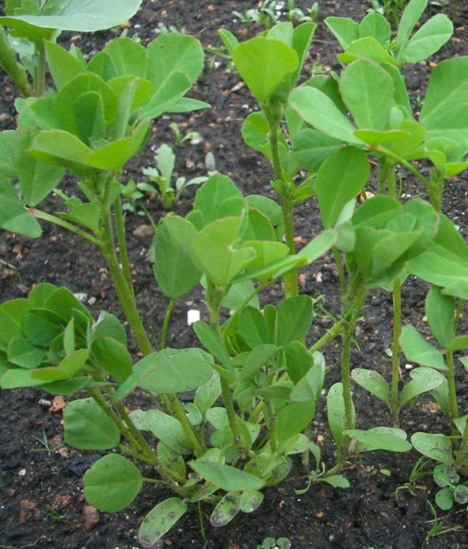

मेथीFenugreek
Trigonella foenum-graecum · Fabaceae · FLR-0098

- Scientific name
- Trigonella foenum-graecum L.
- Family
- Fabaceae
- Hindi
- मेथी
- Status here
- cultivated
- IUCN
- not evaluated
When to look कब देखें
Expected mainly in October, November, December, January, February, March, April.
मेथी / Fenugreek
Trigonella foenum-graecum L. — Fabaceae
मेथी (मेथी साग / मेथी दाना / फेनुग्रीक) — पूर्वी उत्तर प्रदेश के खेतों और बाड़ियों में शरद ऋतु (Rabi season) में उगाई जाने वाली एक अत्यंत महत्वपूर्ण, सुगंधित और छोटी वार्षिक शाकीय औषधि व मसाला फसल (erect annual herb) है। यह मूल रूप से भूमध्यसागरीय क्षेत्र और मध्य पूर्व की निवासी है, लेकिन भारत में इसकी खेती प्राचीन काल से ही की जा रही है। इसकी सबसे बड़ी पहचान इसके तीन-पत्ती वाले तिपतिया पत्ते (clover-like leaves), छोटे सफ़ेद-पीले रंग के मटर जैसे फूल, और पतली लंबी फलियाँ (pods) हैं जिनमें पीले-भूरे रंग के खुशबूदार बीज भरे होते हैं। मेथी की तीखी, विशिष्ट सुगंध इसमें पाए जाने वाले 'सोटोलोन' (sotolone) नामक अत्यधिक गंधयुक्त यौगिक के कारण होती है। एक फलीदार (legume) पौधा होने के कारण इसकी जड़ों में नाइट्रोजन-स्थिरीकरण करने वाली ग्रंथियां होती हैं जो मिट्टी की उर्वरता को प्राकृतिक रूप से बढ़ाती हैं। पूर्वी उत्तर प्रदेश में इसकी पत्तियों का उपयोग हरी सब्जी (साग) व परांठे बनाने के लिए किया जाता है, और इसके बीजों का उपयोग तड़के (chhonk) और पारंपरिक औषधियों में होता है।
Quick Identification त्वरित पहचान
| Feature | Description |
|---|---|
| Plant habit | Erect, smooth, branching annual herb growing up to 30–60 cm high |
| Leaves | Alternately arranged, trifoliate (three-leaflets); leaflets are obovate (15–25 mm long), light green, looking like clover |
| Flowers | Small (10–12 mm), pea-like, white or pale yellow, sitting singly or in pairs directly in the leaf joints |
| Fruit | A long, narrow, straight or slightly curved pod (8–15 cm) ending in a long pointed beak |
| Seeds | Yellowish-brown, rectangular, flat seeds (3–5 mm) with a diagonal groove across one side, possessing a strong maple-like scent |
Field tip: Walk inside a winter field during December. Look for low-growing patches of light green clover-like leaves. Pluck a leaf and rub it; it will release a strong, sweet, curry-like spice smell. Look for tiny white flowers sitting close to the stem.
Morphology आकारिकी
Biometrics (typical measurements of mature plants in the northern Indian plains):
| Measurement | Range |
|---|---|
| Plant height | 30–60 cm |
| Leaflet length | 1.5–2.5 cm |
| Leaflet width | 1.0–1.8 cm |
| Flower length | 10–12 mm |
| Pod length | 8–15 cm |
| Seeds per pod | 10–20 |
| Seed length | 3–5 mm |
Stem and Branches: Stems are erect, round, smooth or slightly hairy, light green, hollow inside when mature.
Foliage: Compound trifoliate leaves, with dentate (slightly toothed) margins towards the leaflet tips.
Flowers: Hermaphrodite, typical papilionaceous structure. The calyx is tube-like, with 5 narrow teeth.
Fruit and Seeds: The dry pods split open when dry, containing hard, rhomboidal seeds rich in mucilage and dietary fiber.
Cultivation Calendar कृषि कैलेंडर
- Sowing: Seeds are sown broadcast directly in Rabi beds from mid-October to late November.
- Leaf Harvesting: Sown crops are cut close to the ground 30–40 days after sowing. Multiple cuttings are taken for leafy green vegetable (methi saag) use through December–February.
- Seed Harvesting: Left uncut, the plants flower in January, and the pods dry and turn yellow-brown by March–April. The entire plant is uprooted and threshed to collect the seeds.
- Soil Benefit: The roots house symbiotic Rhizobium bacteria, fixing atmospheric nitrogen and enriching the soil for the next crop.
Associated Species / Interactions संबंधित प्रजातियाँ
- Soil Bacteria Mutualism: Roots host nitrogen-fixing nodules, enriching soil nitrogen levels which benefits surrounding companion winter crops like mustard.
- Pollinators: Visited by honeybees and leafcutter bees for nectar during sunny winter afternoons.
Pests and Diseases कीट और रोग
- Powdery Mildew: Fungal disease causing a white dusty powder to cover leaves in late winter, causing leaves to dry and drop.
- Mustard Aphids: Tiny green sap-sucking bugs that cluster on tender flower stems during cloudy winter weeks.
Traditional and Ethnobotanical Use पारंपरिक और नृवंशवनस्पति उपयोग
- Methi ke Laddu (Postpartum Recovery): Coarsely ground fenugreek seeds are soaked in milk, cooked in ghee with wheat flour, jaggery (gur), and dry fruits to make medicinal sweet balls (Methi ke Laddu), given to lactating mothers to increase breast milk production and relieve joint pain.
- Methi Saag (Winter Greens): Fresh green leaves are chopped and cooked with mustard oil, green chillies, and new winter potatoes to make Aloo-Methi, a common winter dish in eastern UP.
- Panch Phoron Spice: The bitter seeds are one of the five essential spices in the traditional blend Panch Phoron (along with fennel, cumin, mustard, and nigella), used as a tempering spice for dals and pickles.
- Hair Fall Remedy: Seeds are soaked overnight in water, ground into a fine paste, and applied to the scalp for 30 minutes as a traditional hair mask to reduce dandruff and hair fall.
Expected Locally स्थानीय रूप से अपेक्षित
Not a field record. Written from published accounts for eastern Uttar Pradesh. No confirmed local sighting yet — if you have seen it, that is what the atlas needs.
अभी तक स्थानीय पुष्टि नहीं। यह विवरण प्रकाशित स्रोतों से है, किसी अवलोकन से नहीं।
A common winter crop grown in home gardens and agricultural fields throughout the Basti district, regularly observed in the Harraiya, Vikramjot, and Basti blocks. Local women state that methi saag is one of the earliest winter greens available in December. The dry seeds are stored in air-tight tin containers in every village kitchen as an essential daily spice.
Distribution वितरण
Global range: Native to the Mediterranean basin and Western Asia; cultivated widely across North Africa, Southern Europe, and South Asia.
In India: Cultivated universally as a Rabi crop; Rajasthan accounts for the major share of national seed production.
In Uttar Pradesh: Abundant state-wide in all winter crop districts.
In Basti district / eastern UP: Widespread across all agricultural blocks.
Research Questions शोध प्रश्न
Anyone can investigate these | कोई भी इन प्रश्नों की जाँच कर सकता हैt
- How many days does a Fenugreek plant take to produce dry seeds after the first cutting of its leaves? — Track growth and compare seed yield in cut vs uncut plots.
- What is the number of aphids on Fenugreek plants intercropped with garlic compared to single plots? — Test companion planting.
- Does soaking Fenugreek seeds in warm water for 12 hours double the germination rate compared to dry sowing? — Conduct seed trials.
- How many root nodules can be counted on a single mature Fenugreek plant grown in sandy soil versus clay soil? — Dig and compare nodule counts.
- Does feeding dried fenugreek leaves to domestic goats improve their weight gain over one month in Basti? / क्या बस्ती में घरेलू बकरियों को मेथी के सूखे पत्ते खिलाने से उनके वजन में एक महीने में वृद्धि होती है? — Monitor livestock feeding groups.
Similar Species मिलती-जुलती प्रजातियाँ
| Species | How to tell apart | comparison |
|---|---|---|
| Alfalfa (Medicago sativa) | Perennial herb; leaflets are narrower; flowers are violet-blue; pods are coiled spiral | लूसर्न — बैंगनी फूल, गोल कुण्डलीदार फलियाँ |
| Yellow Sweet Clover (Melilotus officinalis) | Much taller; flowers are small, yellow, arranged in long upright spikes; lacks bitter smell | वन मेथी — पीले फूल मंजरी, अधिक ऊँचाई |
| Clover (Trifolium repens) | Creeping stoloniferous herb; flowers are clustered in round white globose heads; leaves are rounder | श्वेत तिपतिया — सफेद गोल फूल, जमीन पर फैलने वाली |
Field rule: Erect winter annual herb with three-leaflet clover-like leaves, strong maple-curry scent from all parts, small white-yellow flowers in leaf axils, and long narrow pointed pods, is Fenugreek (Methi).
Taxonomy & Classification वर्गीकरण
Original description. Carl Linnaeus described Fenugreek as Trigonella foenum-graecum in 1753 in his Species Plantarum (Vol. 2, p. 777). The type locality was listed as France. The genus name Trigonella is derived from the Greek trigonos, meaning three-angled, referencing the triangular appearance of the small flowers. The specific name foenum-graecum is Latin for Greek hay, referencing its historical use as animal forage in Greece.
Subspecies. Monotypic — no subspecies are currently recognised in the main index.
Family and order placement. Placed in the order Fabales, family Fabaceae (pea or legume family), subfamily Faboideae, tribe Trifolieae.
Phylogenetic notes. Trigonella is closely related to the genera Medicago (alfalfa) and Melilotus (sweet clover), sharing evolutionary pathways for starch storage and nitrogen-fixing associations with Sinorhizobium bacteria.
IUCN status rationale. Not evaluated (NE) by the IUCN Red List. It has a secure, widely distributed global agricultural population.
Photo Gallery फोटो गैलरी
References संदर्भ
- Linnaeus, C. (1753). Species Plantarum. Laurentii Salvii, Holmiae, Vol. 2, p. 777. [original description]
- Brandis, D. (1906). Indian Trees (covers leguminous Fabaceae divisions). Archibald Constable & Co., London.
- Kirtikar, K. R. & Basu, B. D. (1935). Indian Medicinal Plants. Vol. I. Lalit Mohan Basu, Allahabad.
- Petropoulos, G. A. (2002). Fenugreek: The Genus Trigonella (the definitive monograph on botany, chemistry, and cultivation). Taylor & Francis, London.
- World Flora Online (2024). Trigonella foenum-graecum details.
- GBIF Occurrence Data — Trigonella foenum-graecum, India (2010–2025).
Source file: species/flora/crops/fenugreek.md